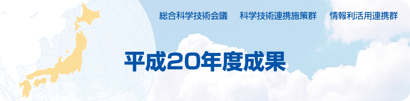

平成20年度成果 総合科学技術会議 科学技術連携施策群 情報利活用連携群
情報の巨大集積化と利活用基盤技術開発連携群の活動 〜情報爆発時代におけるソリューションと連携強化〜
2．個別成果
東京大学生産技術研究所 教授 喜連川 優
京都大学大学院情報学研究科 教授 松山 隆司
2−3 非順序型実行原理に基づく
超高性能データベースエンジンの開発
東京大学生産技術研究所 教授 喜連川 優
株式会社日立製作所ソフトウェア事業部 主管技師 河村 信男
科学技術振興調整費採択課題研究代表 京都大学学術情報メディアセンター 教授 美濃 導彦